정보통신산업기사 (2008-09-07 기출문제)
1과목: 디지털전자회로
1. 다음 중 JK플립플롭의 논리식으로 옳은 것은? (단, Qn 은 시간(t)에서의 출력 상태이고 Qn+1은 시간 (t+1)에서의 출력 상태임)
- JQn+KQn
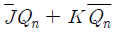
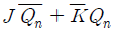
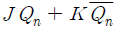
(정답률: 69%)

2. 다음 중 불 대수식을 간략화 하면?
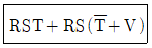
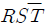
- RSV
- RST
- RS
(정답률: 71%)
3. 트랜지스터 h 파라미터의 물리적 의미가 틀린 것은?
- hi : 출력단락 입력 임피던스
- hr : 입력개방 전류 증폭율
- hf : 출력단락 전류 증폭율
- ho : 입력개방 출력 어드미턴스
(정답률: 80%)
4. 다음 FET 회로의 전압이득은 약 얼마인가? (단, gm=10[m℧], rd=50[kΩ])
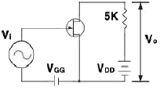
- -15.5
- -23.8
- -33.3
- -45.5
(정답률: 23%)
5. 다음 중 궤환발진기의 바크하우젠(Barkhausen)의 발진 조건에서의 크기는?
- 0
- 1
- 10
- 100
(정답률: 94%)
6. 달링텅(Darlington) 회로의 설명으로 틀린 것은?
- 전압 이득이 1보다 작다.
- 전류 이득이 크다.
- 입력 저항이 적다.
- 출력 저항이 적다.
(정답률: 50%)
7. 다음 중 그림과 등가인 Gate 회로는?
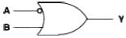
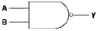
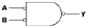
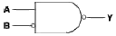
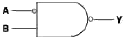
(정답률: 54%)
8. 그림과 같은 회로의 명칭이 옳은 것은?
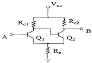
- 시미트 트리거 회로
- 차동 증폭회로
- 푸시풀 증폭회로
- 부트스트랩회로
(정답률: 67%)
9. 다음은 반가산기(Half Adder)의 블록도이다. 출력단자 S(sum) 및 C(carry)에 나타나는 논리식은?
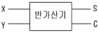
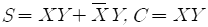
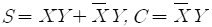
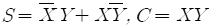
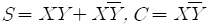
(정답률: 54%)
10. 신호파의 최고 주파수가 15[kHz]이다. PCM 검파에서 원래의 신호파로 복원하기 위한 표본화 펄스의 최소 주파수로 옳은 것은?
- 45[kHz]
- 30[kHz]
- 20[kHz]
- 15[kHz]
(정답률: 87%)
11. 다음 연산 증폭기에서 입출력 전압 관계식은?
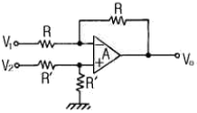
- Vo=V2-V1
- Vo=V2+V1
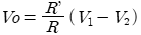
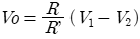
(정답률: 60%)
12. 피변조파 I-Ic(1+msin Wst)sin Wct로 표시되는 전류가 부하저항 R에 흐르면 이 때 상측파대의 전력은?
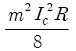
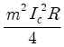
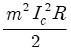
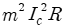
(정답률: 56%)
13. 다음 중 C급 증폭기의 일반적인 특징이 아닌 것은?
- 효율이 높다
- 출력단에 공진회로가 필요하다.
- 직진성이 좋다
- 고출력용으로 많이 사용된다.
(정답률: 50%)
14. 듀티 사이클(duty cycle)이 0.1이고 주기가 30[μs]인 펄스의 폭은 얼마인가?
- 10[μs]
- 6[μs]
- 3[μs]
- 1[μs]
(정답률: 83%)
15. 다음 논리식 중 서로 관계가 틀린 것은?
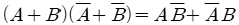
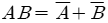
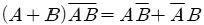
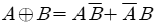
(정답률: 67%)
16. RC 회로의 스텝전압 입력시 발생파형의 상승시간(rise time) tr와 관계 없는 것은? (단, fH : 상측 3dB 주파수, B: 대역폭 , τ: 시정수 )
- tr=2.2RC
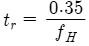
- tr=1/B
- tr=1.1τ
(정답률: 56%)
17. 하나의 논리 케이트 출력이 정상적인 동작 상태를 유지하면서 구동할 수 있는 표준 부하의 수를 의미하는 것은?
- 팬 아웃(fan-out)
- 전력소모(power dissipation)
- 전파지연시간(propagation delay time)
- 잡음 여유도(nosie margin)
(정답률: 79%)
18. 진폭변조시 피변조파의 최대진폭이 A, 최소진폭이 B일 경우 변쥬율(m)은?
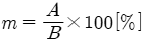
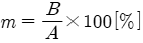
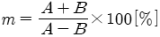
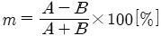
(정답률: 67%)
19. 다음 중2진 비교기의 구성요소를 맞게 설명한 것은?
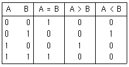
- 인버터 2개, NOR 게이트 2개, NOR 게이트 1개
- 인버터 2개, AND 게이트 1개, NOR 게이트 2개
- 인버터 2개, AND 게이트 2개, EX-NOR 게이트 1개
- 인버터 2개, NAND 게이트 2개, EX-OR 게이트 1개
(정답률: 67%)
20. 다음 중 B급 푸시풀 전력 증폭기는 어느 것이 제거 되는가?
- 기본파
- 우수 고조파
- 기수 고조파
- 모든 고조파
(정답률: 62%)
2과목: 정보통신기기
21. 다음 중 GPS(Global Positioning System)의 주요 구성 부문에 속하지 않는 것은?
- 위성 부문
- 지상관제 부문
- 사용자 부문
- 패이로드 부문
(정답률: 53%)
22. 트래픽 단위에서 144[HCS]는 몇 [Erl]인가?
- 3
- 4
- 5
- 6
(정답률: 63%)
23. TV 방송전파를 이용하여 TV 방송과 함계 문자 또는 도형형태의 정보제공이 가능한 뉴미디어는?
- 텔렉스
- 텔리텍스트
- 정지화방송
- 비디오텍스
(정답률: 59%)
24. 다음 중 HDTV 화면의 세로:가로의 비는?
- 4:3
- 3:4
- 16:9
- 9:16
(정답률: 56%)
25. 다음 중 컴퓨터를 이용하여 마이크로 필름에 들어있 는 정보를 검색하기 위한 장치는?
- OMR
- OCR
- COM
- CAR
(정답률: 46%)
26. 다음 중 DTE와 DCE간의 RS-232C 25핀 접속에서 통신이 가능하기 위해 필요한 최소한의 핀 연결은?
- 1번(PG), 2번(TD), 7번(SG)
- 2번(TD), 3번(RD), 7번(SG)
- 3번(RD), 4번(RTS), 7번(SG)
- 4번(RTS), 5번(CTS), 7번(SG)
(정답률: 62%)
27. 다음 중 팩시밀리, TV 카메라 등에 사용되는 CCD의 기능이 아닌 것은?
- 광전 변환
- 전하 축적
- 전하 재생
- 전하 전송
(정답률: 32%)
28. 음성급 전화회선에 사용하는 주파수의 범위는?
- 300 ~ 3400[Hz]
- 300 ~ 5000[Hz]
- 100 ~ 10000[kHz]
- 300 ~ 20000[Hz]
(정답률: 63%)
29. 다음 중 동영상 압축 기술로서 고품질 방송 서비스를 지원하기 위한 것은?
- MPGE-2
- JPEG
- AC-3
- MPGE-1
(정답률: 56%)
30. 지능 다중화기에 대한 설명으로 옳은 것은?
- 동기식 시분할 다중화기라고도 한다.
- 동적인 시간 폭의 배정이 가능하다.
- 전송효율이 매우 좋지 않다.
- 타임슬롯의 낭비가 심하다.
(정답률: 38%)
31. 다음 중 위성통신의 장점이 아닌 것은?
- 광역성
- 이동성
- 동보성
- 지연성
(정답률: 50%)
32. 고품질의 영상서비스를 언제 어디서나 제공할 수 있는 이동 멀티미디어 방송서비스가 가능한 것은?
- CATV
- DMB
- DTV
- RFID
(정답률: 60%)
33. 전기 통신망에서 정보를 교환하는 방식이 아닌 것은?
- 회선교환
- 패킷교환
- 망교환
- 메시지교환
(정답률: 42%)
34. 주파수 공용통신(TRS)의 설명으로 적합하지 않은 것은?
- 통신방식은 반이중방식이다.
- 그룹호출(Group Call)이 가능하다.
- 일대 다수의 통화가 불가능하다.
- 잡음과 혼신이 적어 양호한 통화품질을 유지한다.
(정답률: 57%)
35. 다음 중 송신측 및 수신측에서 사용하는 통신 시스템의 비선형성으로 인하여 주로 발생하는 잡음은?
- 누화 잡음
- 충격 잡음
- 백색 잡은
- 상호변조 잡음
(정답률: 16%)
36. 다음 중 비동기식 변복조기에 주로 사용되는 변조방식은?
- 진폭편이변조(ASK)
- 주파수편이변조(FSK)
- 위상편이변조(PSK)
- 직교변조(QAM)
(정답률: 34%)
37. 다음 중 각 가정의 댁내까지 광가입자 전송망 구축을 위한 것은?
- FTTO
- HFC
- HDSL
- FTTH
(정답률: 54%)
38. 정보통신시스템에서 정보 전송계의 구성요소가 아닌 것은?
- 단말장치
- 주변장치
- 통신제어장치
- 데이터 전송회선
(정답률: 23%)
39. 위성통신의 다원접속방식 중 CDMA 방식에 대한 설명으로 틀린 것은?
- 통신보안이 우수하다.
- 간섭 및 방해에 강하다.
- 스펙트럼 확산 기술을 이용한다.
- 전송대역폭이 좁아 주파수의 이용효율이 높다.
(정답률: 39%)
40. 음성신호를 패킷 데이터로 변환하여 인터넷 망에서 전화 서비스를 제공하는 것은?
- WiBro
- Telematics
- WCDMA
- VoIP
(정답률: 65%)
3과목: 정보전송개론
41. 대역폭이 8[Hz], 신호대 잡음비(S/N비)가 0인 채널을 사용하여 데이터를 전송하는 경우 채널용량은 몇[bps] 인가?
- 0 [bps]
- B [bps]
- 2B [bps]
- 4B [bps]
(정답률: 40%)
42. 다음 교환방식 중 정보전송을 시작하기 전에 두 지점의 논리적인 전송로를 설정하고 VCI를 이용하여 전송하는 방식은?
- 회선교환방식
- 메시지교환방식
- 가상회선교환방식
- 데이터그램교환방식
(정답률: 53%)
43. 8진 PSK에서 반송파간의 위상차는 얼마인가?
- π
- π/2
- π/4
- π/8
(정답률: 48%)
44. 다음 중 문자 방식 프로토콜의 프레임 구조에서 BCC(Block check character)의 체크 범위가 아닌 것은?
- STX
- TEXT
- ETX
- SOH
(정답률: 24%)
45. 다음 ARQ 방식 중에서 망의 상태에 따라 오류제어 방식을 가변할 수 있는 방식은?
- Hybrid ARQ
- Go-Back-N ARQ
- Stop and Wait ARQ
- Selective Repeat ARQ
(정답률: 34%)
46. 다음 중 혼합형 동기식 전송 방식에 대한 설명으로 적합 하지 않은 것은?
- 문자와 문자 간에 휴지시간이 없다.
- 비동기식 보다 전송 속도가 빠르다.
- 송신 측과 수신 측이 동기 상태이어야 한다.
- 비동기식의 경우처럼 시작비트와 종료비트를가진다.
(정답률: 48%)
47. 동축 케이블과 비교할 때 광섬유 케이블의 장점이 아닌 것은?
- 전송용량이 크다.
- 보안의 유지가 쉽다.
- 유지 보수가 간편하다.
- 중계기 간격을 크게 할 수 있다.
(정답률: 50%)
48. 기저대역 전송에서 전송부호가 가져야 하는 조건으로 적합하지 않은 것은?
- 전송 대역폭이 넓어야 한다.
- 에러 검출 및 교정이 쉬워야 한다.
- 코딩 효율이 양호해야 한다.
- 직류 성분이 포함되지 않아야 한다.
(정답률: 32%)
49. HDLC에서 비트열 0111 1111을 전송할 때 비트 스터핑 (bit stuffing)의 결과는?
- 0111 11110
- 0111 01111
- 0111 10111
- 0111 11011
(정답률: 48%)
50. 다음 중 PCM 방식의 부호화 과정에서 널리 사용되는 부호는?
- BCH 부호
- CRC 부호
- Gray 부호
- Hamming 부호
(정답률: 42%)
51. 데이터 전송에서 직렬전송과 병렬전송의 특징에 대한 설명으로 적합하지 않은 것은?
- 병렬전송은 직ㆍ병렬 변환회로가 필요하다.
- 직렬전송은 주로 원거리 전송에 사용된다.
- 직렬전송은 병렬전송에 비해 전송속다가 느리다.
- 병렬전송은 일반적으로 strobe와 busy 신호를 이용 하여 데이터를 송ㆍ수신한다.
(정답률: 32%)
52. 다음 중 PCM에서 컴팬딩(companding)에 대한 설명으로 적합하지 않은 것은?
- 압축과 신장의 합성어 이다.
- 압축법칙에는 μ법칙과 A 법칙이 있다.
- 선형 양자화 방식보다 양자화 스탭(계단) 수가 늘어 난다.
- 압축이란 작은 PAM의 경우 크게, 큰 PAM의 경우 작게 만드는 것을 말한다.
(정답률: 50%)
53. 변조속도가 4000[baud]이고, 8진 PSK를 사용하는 경우 데이터 신호속도는 몇 [bps] 인가?
- 8000 [bps]
- 12000 [bps]
- 16000 [bps]
- 18000 [bps]
(정답률: 50%)
54. OSI 7계층에서 기계적, 전기적, 기능적, 절차적 특성을 갖는 구조화되지 않은 비트 스트림을 전송하는 계층은?
- 물리계층
- 세션계층
- 응용계층
- 네트워크계층
(정답률: 53%)
55. 다음 중 전진 에러 수정(FEC) 코드에 해당하는 것은?
- 허프만 코드
- 일정비코드
- 해밍코드
- 군 계수 검사코드
(정답률: 50%)
56. 다음 중 비동기식 전송 방식과 비교 했을 때 동기식 전송 방식의 장점으로 가장 적합한 것은?
- 비동기식보다 비용이 작게 든다.
- 통신채널을 효율적으로 이용한다.
- 낮은 속도의 전송에 유리하다.
- 기계적으로 별로 복잡하지 않다.
(정답률: 14%)
57. 프로토콜의 기능 중 데이터의 양이나 통신속도 등이 수신측의 처리 능력을 초과하지 않도록 조정하는 기능은?
- 다중화
- 흐름제어
- 연결제어
- 주소설정
(정답률: 48%)
58. DM 방식에서 양자화시 사용하는 비트수는?
- 1 bit
- 4 bit
- 7 bit
- 8 bit
(정답률: 24%)
59. HDLC에 사용되는 S 프레임의 사용용도를 가장 잘 설명한 것은?
- 사용자 데이터를 전송하는데 사용된다.
- 링크의 설정, 해제, 오류 회복을 위해 주로 사용된다.
- 전송되는 정보 프레임에 대한 흐름제어와 오류제어를 하기 위해 사용된다.
- 플래그(flag)를 전송하기 위해 사용된다.
(정답률: 29%)
60. 다음 중 단일 모드 광섬유에 대한 설명으로 적합하지 않은 것은?
- 모드 간 분산의 영향이 크다.
- 초 광대역 전송이 가능하다.
- 장거리 대용량 시스템에 주로 사용된다.
- 코어의 직경이 10[μm]정도로 제조 및 접속하기가 어렵다.
(정답률: 37%)
4과목: 전자계산기일반 및 정보설비기준
61. CPU가 명령어를 갖고 마이크로오퍼레이션을 수행하는데 요구되는 시간을 의미하는 것은?
- CPU 검색 타임
- CPU 액세스 타임
- CPU 실행 타임
- CPU 사이클 타임
(정답률: 22%)
62. 스택 구조를 갖고 잇는 주소 방식은?
- 0-주소 방식
- 1-주소 방식
- 2-주소 방식
- 3-주소 방식
(정답률: 31%)
63. 2진수 0111을 그레이 코드(Gray code)로 변환하면?
- 1010
- 0100
- 0000
- 1111
(정답률: 48%)
64. 유닉스 계열의 운영체제에서 각 파일이 만들어질 때, 운영 체제에 의해 부여되는 고유 번호를 의미하는 것은?
- PCB
- I-node
- kernel
- file descriptor
(정답률: 32%)
65. 다음 중 어떤 현상의 복잡한 과정을 유사한 모델을 사용하여 실험하고 이로부터 최적해를 구하는 모의 실험을 의미하는 것은?
- 제어 프로그램
- 시뮬레이션
- 컴파일러
- 에뮬레이터
(정답률: 48%)
66. 입출력 레지스터들을 액세스할 때는 반드시 별도의 명령어들을 사용해야 하며, 입출력 주소 공간이 기억장치 주소공간과는 별도로 지정될 수 있는 장점을 갖는 방식은?
- Memory-mapped I/O
- Isolate I/O
- interrupt I/O
- Programmed I/O
(정답률: 10%)
67. CPU가 다음에 처리해야 할 명령이나 데이터의 메모리 상의 번지를 지시하는 것은?
- IR
- PC
- SP
- MAR
(정답률: 47%)
68. 2진화 10진 코드(BCD)는 최대 몇 개의 문자를 표현할 수 있는가?
- 4자
- 8자
- 64자.
- 128자
(정답률: 37%)
69. C언어에서 입출력 함수에서 사용하는 정수형으로 16진수로 변환하는 형식인자는?
- %d
- %x
- %o
- %f
(정답률: 39%)
70. 중앙처리 장치와 입ㆍ출력 장치 사이의 속도차이를 해결하기 위한 방법과 거리가 먼 것은?
- 인터럽트(interrupt)
- 버퍼링(buffering)
- 스풀링(spooling)
- 채널(channel)
(정답률: 34%)
71. 다음 중 발주자에게 감리결과를 통보할 때 포함되어야 하는 사항이 아닌 것은?
- 착공일 및 완공일
- 공사업자의 성명
- 시공상태의 평가 결과
- 설계변경에 관한 사항
(정답률: 31%)
72. 다음 ( ) 안에 들어갈 내용으로 가장 적합한 것은?
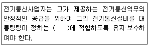
- 설계도서
- 표준규격
- 기술기준
- 관리규정
(정답률: 36%)
73. 정보통신기술자를 공사현장에 배치하지 아니한 자에 대한 벌칙은?
- 200만원 이하의 과태료
- 300만원 이하의 과태료
- 500만원 이하의 과태료
- 1년 이하의 징역또는 1천만원 이하의 벌금
(정답률: 23%)
74. “실시간으로 동영상 정보를 주고 받을 수 있는 고속ㆍ대용량의 정보통신망” 으로 정의되는 것은?
- 정보통신망
- 전기통신망
- 초고속정보통신망
- 광대역통합정보통신망
(정답률: 18%)
75. 방송통신위원회가 전기통신의 원활한 발전과 정보사회의 촉진을 위하여 수립하여 공고하는 전기통신기본계획에 포함되어야 하는 사항이 아닌 것은?
- 전기통신설비에 관한 사항
- 전기통신 정책방향에 관한 사항
- 전기통신의 질서유지에 관한 사항
- 전기통신의 이용효율화에 관한 사항
(정답률: 32%)
76. 다음 ( ) 안에 들어갈 내용으로 가장 적합한 것은?
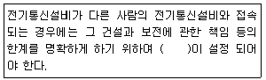
- 단자함
- 분계점
- 절분점
- 접속기준
(정답률: 38%)
77. 다음 ( ) 안에 들어갈 내용으로 가장 적합한 것은?
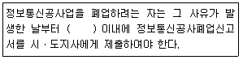
- 7일
- 15일
- 30일
- 2월
(정답률: 6%)
78. 정보통신공사업자 이외의 자가 시공할 수 있는 경미한 공사 범위에 해당하지 않는 것은?
- 실험국의 무선설비설치공사
- 간이무선국의 무선설비설치공사
- 건축물에 설치되는 6회선 이상의 구내통신선로 설비 공사
- 허브의 증설을 수반하지 아니하는 5회선 이하의 근거리 통신망 선로의 증설공사
(정답률: 29%)
79. 보편적 역무의 구체적 내용을 정할 시 고려사항에 속하지 않는 것은?
- 정보화 촉진
- 이용자의 이익과 안전
- 전기통신역무의 보급 정도
- 정보통신기술의 발전 정도
(정답률: 44%)
80. 다음 중 정보통신공사업의 등록을 할 수 있는 자는?
- 한정치산자
- 파산선고를 받고 복권되지 아니한 자
- 전기통신기본법의 규정에 의하여 벌금형의 선고를 받고 3년을 경과한 자
- 정보통신공사업의 규정에 의하여 등록이 취소된 후 2년을 경과하지 아니한 자
(정답률: 45%)
JK플립플롭은 J와 K 입력에 따라 출력 상태가 결정된다. J와 K 입력이 모두 0일 때는 이전 출력 상태를 유지하며, J와 K 입력이 모두 1일 때는 이전 출력 상태를 반전시킨다.
따라서, "JQn+KQn"은 현재 출력 상태를 이전 출력 상태와 J, K 입력에 따라 결정하는 논리식으로 옳다.
그러나, ""은 잘못된 논리식이다. 이는 J와 K 입력이 모두 1일 때 이전 출력 상태를 반전시키는 것이 아니라, 이전 출력 상태를 유지하는 것으로 오해할 수 있다.